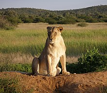
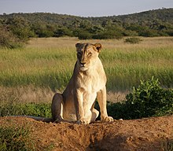
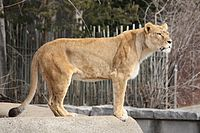
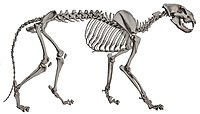
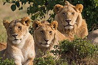
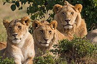

The lion (Panthera leo) is a large cat of the genus Panthera native to Africa and India. It has a muscular, broad-chested body, short, rounded head, round ears, and a hairy tuft at the end of its tail. It is sexually dimorphic; adult male lions are larger than females and have a prominent mane. It is a social species, forming groups called prides. A lion's pride consists of a few adult males, related females, and cubs. Groups of female lions usually hunt together, preying mostly on large ungulates. The lion is an apex and keystone predator; although some lions scavenge when opportunities occur and have been known to hunt humans, the species typically does not actively seek out and prey on humans.
The lion inhabits grasslands, savannas and shrublands. It is usually more diurnal than other wild cats, but when persecuted, it adapts to being active at night and at twilight. During the Neolithic period, the lion ranged throughout Africa, Southeast Europe, the Caucasus, Western Asia and northern parts of India, but it has been reduced to fragmented populations in sub-Saharan Africa and one population in western India. It has been listed as Vulnerable on the IUCN Red List since 1996 because populations in African countries have declined by about 43% since the early 1990s. Lion populations are untenable outside designated protected areas. Although the cause of the decline is not fully understood, habitat loss and conflicts with humans are the greatest causes for concern.
One of the most widely recognised animal symbols in human culture, the lion has been extensively depicted in sculptures and paintings, on national flags, and in contemporary films and literature. Lions have been kept in menageries since the time of the Roman Empire and have been a key species sought for exhibition in zoological gardens across the world since the late 18th century. Cultural depictions of lions were prominent in Ancient Egypt, and depictions have occurred in virtually all ancient and medieval cultures in the lion's historic and current range.
 

The English word lion is derived via Anglo-Norman liun from Latin leōnem (nominative: leō), which in turn was a borrowing from Ancient Greek λέων léōn. The Hebrew word לָבִיא lavi may also be related.[4] The generic name Panthera is traceable to the classical Latin word 'panthēra' and the ancient Greek word πάνθηρ 'panther'.[5]
Felis leo was the scientific name used by Carl Linnaeus in 1758, who described the lion in his work Systema Naturae.[3] The genus name Panthera was coined by Lorenz Oken in 1816.[10] Between the mid-18th and mid-20th centuries, 26 lion specimens were described and proposed as subspecies, of which 11 were recognised as valid in 2005.[1] They were distinguished mostly by the size and colour of their manes and skins.[11]
In the 19th and 20th centuries, several lion type specimens were described and proposed as subspecies, with about a dozen recognised as valid taxa until 2017.[1] Between 2008 and 2016, IUCN Red List assessors used only two subspecific names: P. l. leo for African lion populations, and P. l. persica for the Asiatic lion population.[2][12][13] In 2017, the Cat Classification Task Force of the Cat Specialist Group revised lion taxonomy, and recognises two subspecies based on results of several phylogeographic studies on lion evolution, namely:[14]
However, there seems to be some degree of overlap between both groups in northern Central Africa. DNA analysis from a more recent study indicates, that Central African lions are derived from both northern and southern lions, as they cluster with P. leo leo in mtDNA-based phylogenies whereas their genomic DNA indicates a closer relationship with P. leo melanochaita.[17]
Lion samples from some parts of the Ethiopian Highlands cluster genetically with those from Cameroon and Chad, while lions from other areas of Ethiopia cluster with samples from East Africa. Researchers therefore assume Ethiopia is a contact zone between the two subspecies.[18] Genome-wide data of a wild-born historical lion sample from Sudan showed that it clustered with P. l. leo in mtDNA-based phylogenies, but with a high affinity to P. l. melanochaita. This result suggested that the taxonomic position of lions in Central Africa may require revision.[19]
The lion is a muscular, broad-chested cat with a short, rounded head, a reduced neck and round ears. Its fur varies in colour from light buff to silvery grey, yellowish red and dark brown. The colours of the underparts are generally lighter. A new-born lion has dark spots, which fade as the cub reaches adulthood, although faint spots often may still be seen on the legs and underparts. The lion is the only member of the cat family that displays obvious sexual dimorphism. Males have broader heads and a prominent mane that grows downwards and backwards covering most of the head, neck, shoulders, and chest. The mane is typically brownish and tinged with yellow, rust and black hairs.[45][46]
The tail of all lions ends in a dark, hairy tuft that in some lions conceals an approximately 5 mm (0.20 in)-long, hard "spine" or "spur" that is formed from the final, fused sections of tail bone. The functions of the spur are unknown. The tuft is absent at birth and develops at around 5+1⁄2 months of age. It is readily identifiable by the age of seven months.[47]
Of the living felid species, the lion is rivaled only by the tiger in length, weight, and height at the shoulder.[48] Its skull is very similar to that of the tiger, although the frontal region is usually more depressed and flattened, and has a slightly shorter postorbital region and broader nasal openings than those of the tiger. Due to the amount of skull variation in the two species, usually only the structure of the lower jaw can be used as a reliable indicator of species.[49][50]
 The male lion's mane is the most recognisable feature of the species.[11] It may have evolved around 320,000–190,000 years ago.[61] It starts growing when lions are about a year old. Mane colour varies and darkens with age; research shows its colour and size are influenced by environmental factors such as average ambient temperature. Mane length apparently signals fighting success in male–male relationships; darker-maned individuals may have longer reproductive lives and higher offspring survival, although they suffer in the hottest months of the year. The presence, absence, colour and size of the mane are associated with genetic precondition, sexual maturity, climate and testosterone production; the rule of thumb is that a darker, fuller mane indicates a healthier animal. In Serengeti National Park, female lions favour males with dense, dark manes as mates. Cool ambient temperature in European and North American zoos may result in a heavier mane.[62] Asiatic lions usually have sparser manes than average African lions.[63]
Almost all male lions in Pendjari National Park are either maneless or have very short manes.[64] Maneless lions have also been reported in Senegal, in Sudan's Dinder National Park and in Tsavo East National Park, Kenya.[65] The original male white lion from Timbavati in South Africa was also maneless. The hormone testosterone has been linked to mane growth; castrated lions often have little to no mane because the removal of the gonads inhibits testosterone production.[66] Increased testosterone may be the cause of maned lionesses reported in northern Botswana.[67]
African lions live in scattered populations across sub-Saharan Africa. The lion prefers grassy plains and savannahs, scrub bordering rivers and open woodlands with bushes. It rarely enters closed forests. On Mount Elgon, the lion has been recorded up to an elevation of 3,600 m (11,800 ft) and close to the snow line on Mount Kenya.[45] Savannahs with an annual rainfall of 300 to 1,500 mm (12 to 59 in) make up the majority of lion habitat in Africa, estimated at 3,390,821 km2 (1,309,203 sq mi) at most, but remnant populations are also present in tropical moist forests in West Africa and montane forests in East Africa.[71] The Asiatic lion now survives only in and around Gir National Park in Gujarat, western India. Its habitat is a mixture of dry savannah forest and very dry, deciduous scrub forest.[12]
Lions spend much of their time resting; they are inactive for about twenty hours per day.[80] Although lions can be active at any time, their activity generally peaks after dusk with a period of socialising, grooming and defecating. Intermittent bursts of activity continue until dawn, when hunting most often takes place. They spend an average of two hours a day walking and fifty minutes eating.[81]
The lion is the most social of all wild felid species, living in groups of related individuals with their offspring. Such a group is called a "pride". Groups of male lions are called "coalitions".[82] Females form the stable social unit in a pride and do not tolerate outside females.[83] Membership changes only with the births and deaths of lionesses,[84] although some females leave and become nomadic.[85] The average pride consists of around 15 lions, including several adult females and up to four males and their cubs of both sexes. Large prides, consisting of up to 30 individuals, have been observed.[86] The sole exception to this pattern is the Tsavo lion pride that always has just one adult male.[87] Male cubs are excluded from their maternal pride when they reach maturity at around two or three years of age.[85]
Some lions are "nomads" that range widely and move around sporadically, either in pairs or alone.[82] Pairs are more frequent among related males who have been excluded from their birth pride. A lion may switch lifestyles; nomads can become residents and vice versa.[88] Interactions between prides and nomads tend to be hostile, although pride females in estrus allow nomadic males to approach them.[89] Males spend years in a nomadic phase before gaining residence in a pride.[90] A study undertaken in the Serengeti National Park revealed that nomadic coalitions gain residency at between 3.5 and 7.3 years of age.[91] In Kruger National Park, dispersing male lions move more than 25 km (16 mi) away from their natal pride in search of their own territory. Female lions stay closer to their natal pride. Therefore, female lions in an area are more closely related to each other than male lions in the same area.[92]
The area occupied by a pride is called a "pride area" whereas that occupied by a nomad is a "range".[82] Males associated with a pride tend to stay on the fringes, patrolling their territory. The reasons for the development of sociality in lionesses—the most pronounced in any cat species—are the subject of much debate. Increased hunting success appears to be an obvious reason, but this is uncertain upon examination; coordinated hunting allows for more successful predation but also ensures non-hunting members reduce per capita calorific intake. Some females, however, take a role raising cubs that may be left alone for extended periods. Members of the pride tend to regularly play the same role in hunts and hone their skills. The health of the hunters is the primary need for the survival of the pride; hunters are the first to consume the prey at the site it is taken. Other benefits include possible kin selection, sharing food within the family, protecting the young, maintaining territory, and individual insurance against injury and hunger.[57]
Both males and females defend the pride against intruders, but the male lion is better-suited for this purpose due to its stockier, more powerful build. Some individuals consistently lead the defence against intruders, while others lag behind.[93] Lions tend to assume specific roles in the pride; slower-moving individuals may provide other valuable services to the group.[94] Alternatively, there may be rewards associated with being a leader that fends off intruders; the rank of lionesses in the pride is reflected in these responses.[95] The male or males associated with the pride must defend their relationship with the pride from outside males who may attempt to usurp them.[88]
 

The lion is a generalist hypercarnivore and is considered to be both an apex and keystone predator due to its wide prey spectrum.[98][99] Its prey consists mainly of mammals, particularly ungulates weighing 190–550 kg (420–1,210 lb) with a preference for blue wildebeest, plains zebra, African buffalo, gemsbok and giraffe. Lions also hunt common warthog depending on availability, although the species is below the preferred weight range.[100] In India, sambar deer and chital are the most commonly recorded wild prey,[46][100][101] while domestic livestock may contribute significantly to their diet.[101] They usually avoid fully grown adult elephants, rhinoceroses and hippopotamus and small prey like dik-dik, hyrax, hare and monkey.[100][102] Unusual prey include porcupines and small reptiles. Lions kill other predators such as leopard, cheetah and spotted hyena but seldom consume them.[103]
Young lions first display stalking behaviour at around three months of age, although they do not participate in hunting until they are almost a year old and begin to hunt effectively when nearing the age of two.[104] Single lions are capable of bringing down zebra and wildebeest, while larger prey like buffalo and giraffe are riskier.[88] In Chobe National Park, large prides have been observed hunting African bush elephants up to around 15 years old in exceptional cases, with the victims being calves, juveniles, and even subadults.[105][106] In typical hunts, each lioness has a favoured position in the group, either stalking prey on the "wing", then attacking, or moving a smaller distance in the centre of the group and capturing prey fleeing from other lionesses. Males attached to prides do not usually participate in group hunting.[107] Some evidence suggests, however, that males are just as successful as females; they are typically solo hunters who ambush prey in small bushland.[108]
Lions are not particularly known for their stamina. For instance, a lioness's heart comprises only 0.57% of her body weight and a male's is about 0.45% of his body weight, whereas a hyena's heart comprises almost 1% of its body weight.[109] Thus, lions run quickly only in short bursts at about 48–59 km/h (30–37 mph) and need to be close to their prey before starting the attack.[110] One study in 2018 recorded a lion running at a top speed of 74.1 km/h (46.0 mph).[111] They take advantage of factors that reduce visibility; many kills take place near some form of cover or at night.[112] The lion's attack is short and powerful; they attempt to catch prey with a fast rush and final leap. They usually pull it down by the rump and kill by a strangling bite to the throat. They also kill prey by enclosing its muzzle in their jaws.[113] Male lions usually aim for the backs or hindquarters of rivals, rather than their necks.[114][115]
Lions and spotted hyenas occupy a similar ecological niche and where they coexist they compete for prey and carrion; a review of data across several studies indicates a dietary overlap of 58.6%.[121] Lions typically ignore spotted hyenas unless the lions are on a kill or are being harassed by the hyenas, while the latter tend to visibly react to the presence of lions, with or without the presence of food. Lions seize the kills of spotted hyenas; in the Ngorongoro crater it is common for lions to subsist largely on kills stolen from hyenas, causing the hyenas to increase their kill rate.[122] In Botswana's Chobe National Park, the situation is reversed; hyenas frequently challenge lions and steal their kills, obtaining food from 63% of all lion kills.[123] When confronted on a kill by lions, spotted hyenas may either leave or wait patiently at a distance of 30–100 m (100–330 ft) until the lions have finished.[124]
Hyenas are bold enough to feed alongside lions and to force the lions off a kill. The two species attack one another even when there is no food involved for no apparent reason.[125][126] Lion predation can account for up to 71% of hyena deaths in Etosha National Park. Spotted hyenas have adapted by frequently mobbing lions that enter their territories.[127] When the lion population in Kenya's Masai Mara National Reserve declined, the spotted hyena population increased rapidly.[128] Experiments on captive spotted hyenas show that specimens without prior experience with lions act indifferently to the sight of them, but will react fearfully to lion scent.[122]
Most lionesses reproduce by the time they are four years of age.[139] Lions do not mate at a specific time of year and the females are polyestrous.[140] Like those of other cats, the male lion's penis has spines that point backward. During withdrawal of the penis, the spines rake the walls of the female's vagina, which may cause ovulation.[141][142] A lioness may mate with more than one male when she is in heat.[143] Generation length of the lion is about seven years.[144] The average gestation period is around 110 days;[140] the female gives birth to a litter of between one and four cubs in a secluded den, which may be a thicket, a reed-bed, a cave, or some other sheltered area, usually away from the pride. She will often hunt alone while the cubs are still helpless, staying relatively close to the den.[145] Lion cubs are born blind, their eyes opening around seven days after birth. They weigh 1.2–2.1 kg (2.6–4.6 lb) at birth and are almost helpless, beginning to crawl a day or two after birth and walking around three weeks of age.[146] To avoid a buildup of scent attracting the attention of predators, the lioness moves her cubs to a new den site several times a month, carrying them one-by-one by the nape of the neck.[145]
Usually, the mother does not integrate herself and her cubs back into the pride until the cubs are six to eight weeks old.[145] Sometimes the introduction to pride life occurs earlier, particularly if other lionesses have given birth at about the same time.[88][147] When first introduced to the rest of the pride, lion cubs lack confidence when confronted with adults other than their mother. They soon begin to immerse themselves in the pride life, however, playing among themselves or attempting to initiate play with the adults.[147] Lionesses with cubs of their own are more likely to be tolerant of another lioness's cubs than lionesses without cubs. Male tolerance of the cubs varies—one male could patiently let the cubs play with his tail or his mane, while another may snarl and bat the cubs away.[148]
Pride lionesses often synchronise their reproductive cycles and communal rearing and suckling of the young, which suckle indiscriminately from any or all of the nursing females in the pride. The synchronisation of births is advantageous because the cubs grow to being roughly the same size and have an equal chance of survival, and sucklings are not dominated by older cubs.[88][147] Weaning occurs after six or seven months. Male lions reach maturity at about three years of age and at four to five years are capable of challenging and displacing adult males associated with another pride. They begin to age and weaken at between 10 and 15 years of age at the latest.[149]
The lion is listed as Vulnerable on the IUCN Red List. The Indian population is listed on CITES Appendix I and the African population on CITES Appendix II.[2]
Several large and well-managed protected areas in Africa host large lion populations. Where an infrastructure for wildlife tourism has been developed, cash revenue for park management and local communities is a strong incentive for lion conservation.[2] Most lions now live in East and Southern Africa; their numbers are rapidly decreasing, and fell by an estimated 30–50% in the late half of the 20th century. Primary causes of the decline include disease and human interference.[2] In 1975, it was estimated that since the 1950s, lion numbers had decreased by half to 200,000 or fewer.[177] Estimates of the African lion population range between 16,500 and 47,000 living in the wild in 2002–2004.[178][73] In the Republic of the Congo, Odzala-Kokoua National Park was considered a lion stronghold in the 1990s. By 2014, no lions were recorded in the protected area so the population is considered locally extinct.[179] The West African lion population is isolated from the one in Central Africa, with little or no exchange of breeding individuals. In 2015, it was estimated that this population consists of about 400 animals, including fewer than 250 mature individuals. They persist in three protected areas in the region, mostly in one population in the W A P protected area complex, shared by Benin, Burkina Faso and Niger. This population is listed as Critically Endangered.[13] Field surveys in the WAP ecosystem revealed that lion occupancy is lowest in the W National Park, and higher in areas with permanent staff and thus better protection.[180]
The last refuge of the Asiatic lion population is the 1,412 km2 (545 sq mi) Gir National Park and surrounding areas in the region of Saurashtra or Kathiawar Peninsula in Gujarat State, India. The population has risen from approximately 180 lions in 1974 to about 400 in 2010.[189] It is geographically isolated, which can lead to inbreeding and reduced genetic diversity. Since 2008, the Asiatic lion has been listed as Endangered on the IUCN Red List.[12] By 2015, the population had grown to 523 individuals inhabiting an area of 7,000 km2 (2,700 sq mi) in Saurashtra.[190][191][192] The Asiatic Lion Census conducted in 2017 recorded about 650 individuals.[193]
Lions imported to Europe before the middle of the 19th century were possibly foremost Barbary lions from North Africa, or Cape lions from Southern Africa.[198] Another 11 animals thought to be Barbary lions kept in Addis Ababa Zoo are descendants of animals owned by Emperor Haile Selassie. WildLink International in collaboration with Oxford University launched an ambitious International Barbary Lion Project with the aim of identifying and breeding Barbary lions in captivity for eventual reintroduction into a national park in the Atlas Mountains of Morocco.[199] However, a genetic analysis showed that the captive lions at Addis Ababa Zoo were not Barbary lions, but rather closely related to wild lions in Chad and Cameroon.[200]
In 1982, the Association of Zoos and Aquariums started a Species Survival Plan for the Asiatic lion to increase its chances of survival. In 1987, it was found that most lions in North American zoos were hybrids between African and Asiatic lions.[201] Breeding programs need to note origins of the participating animals to avoid cross-breeding different subspecies and thus reducing their conservation value.[202] Captive breeding of lions was halted to eliminate individuals of unknown origin and pedigree. Wild-born lions were imported to American zoos from Africa between 1989 and 1995. Breeding was continued in 1998 in the frame of an African lion Species Survival Plan.[203]
Lions are part of a group of exotic animals that have been central to zoo exhibits since the late 18th century. Although many modern zoos are more selective about their exhibits,[204] there are more than 1,000 African and 100 Asiatic lions in zoos and wildlife parks around the world. They are considered an ambassador species and are kept for tourism, education and conservation purposes.[205] Lions can live over twenty years in captivity. One lion in Honolulu Zoo died at the age of 22 in August 2007.[206] His two sisters, born in 1986, also reached the age of 22.[207]
The first European "zoos" spread among noble and royal families in the 13th century, and until the 17th century were called seraglios. At that time, they came to be called menageries, an extension of the cabinet of curiosities. They spread from France and Italy during the Renaissance to the rest of Europe.[208] In England, although the seraglio tradition was less developed, lions were kept at the Tower of London in a seraglio established by King John in the 13th century;[209][210] this was probably stocked with animals from an earlier menagerie started in 1125 by Henry I at his hunting lodge in Woodstock, Oxfordshire, where according to William of Malmesbury lions had been stocked.[211]
Lion hunting has occurred since ancient times and was often a royal pastime, intended to demonstrate the power of the king over nature. The earliest surviving record of lion hunting is an ancient Egyptian inscription dated circa 1380 BC that mentions Pharaoh Amenhotep III killing 102 lions "with his own arrows" during the first ten years of his rule. The Assyrians would release captive lions in a reserved space for the king to hunt; this event would be watched by spectators as the king and his men, on horseback or chariots, killed the lions with arrows and spears. Lions were also hunted during the Mughal Empire, where Emperor Jahangir is said to have excelled at it.[217] In Ancient Rome, lions were kept by emperors for hunts, gladiator fights and executions.[218]
Lions do not usually hunt humans but some (usually males) seem to seek them out. One well-publicised case is the Tsavo maneaters; in 1898, 28 officially recorded railway workers building the Kenya-Uganda Railway were taken by lions over nine months during the construction of a bridge in Kenya.[223] The hunter who killed the lions wrote a book detailing the animals' predatory behaviour; they were larger than normal and lacked manes, and one seemed to suffer from tooth decay. The infirmity theory, including tooth decay, is not favoured by all researchers; an analysis of teeth and jaws of man-eating lions in museum collections suggests that while tooth decay may explain some incidents, prey depletion in human-dominated areas is a more likely cause of lion predation on humans.[224] Sick or injured animals may be more prone to man-eating but the behaviour is not unusual, nor necessarily aberrant.[225]
The lion is one of the most widely recognised animal symbols in human culture. It has been extensively depicted in sculptures and paintings, on national flags, and in contemporary films and literature.[45] It appeared as a symbol for strength and nobility in cultures across Europe, Asia and Africa, despite incidents of attacks on people. The lion has been depicted as "king of the jungle" and "king of beasts", and thus became a popular symbol for royalty and stateliness.[229] The lion is also used as a symbol of sporting teams.[230]
Source: Wikipedia